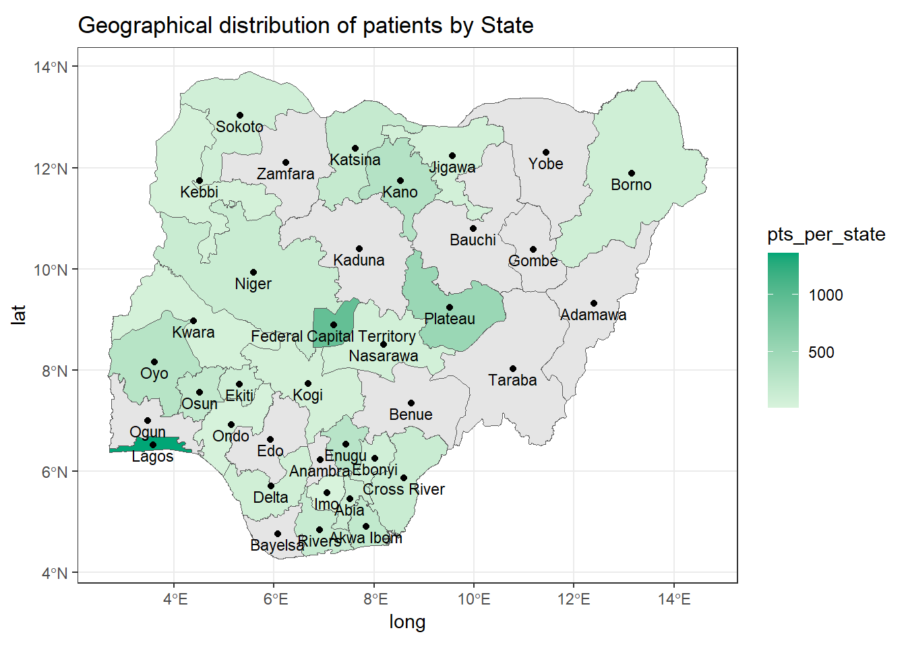
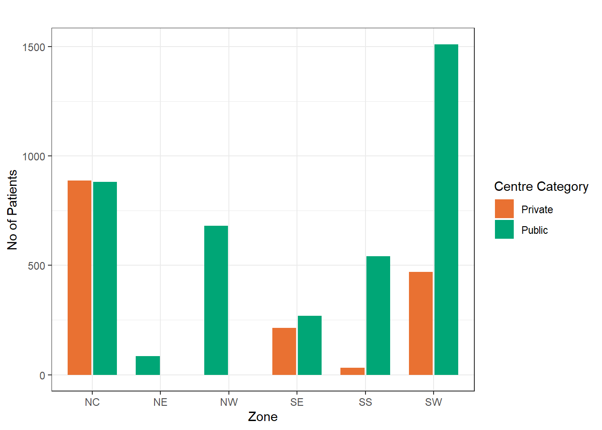
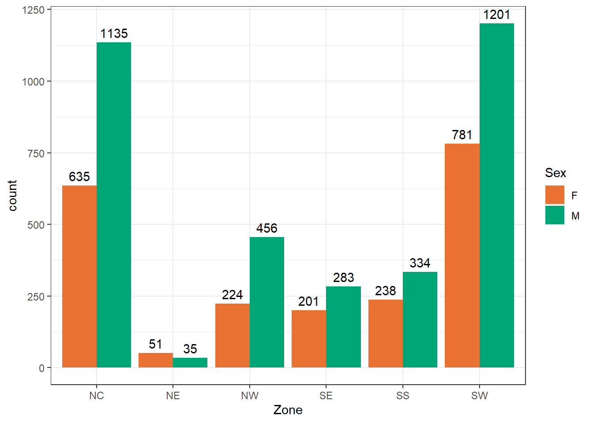
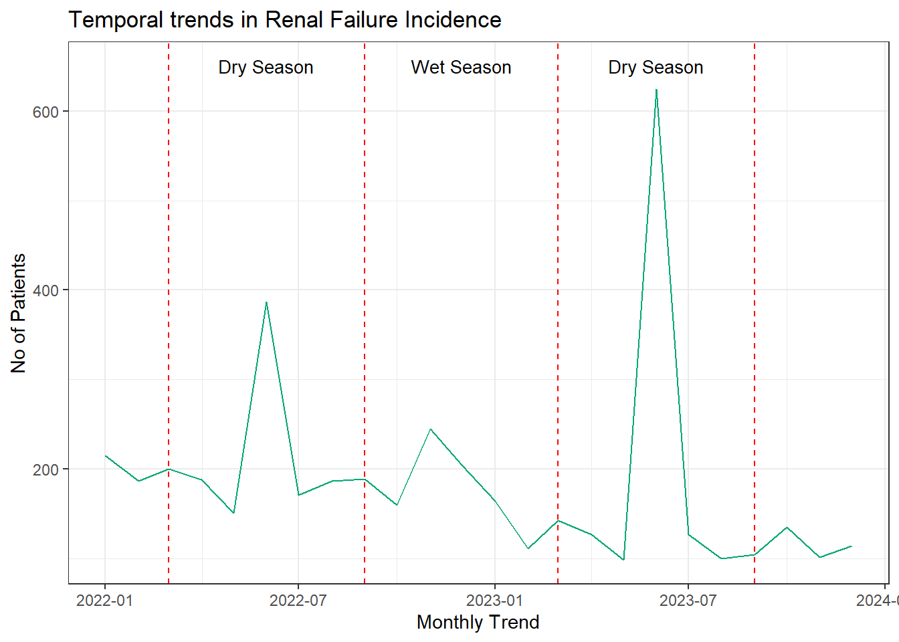
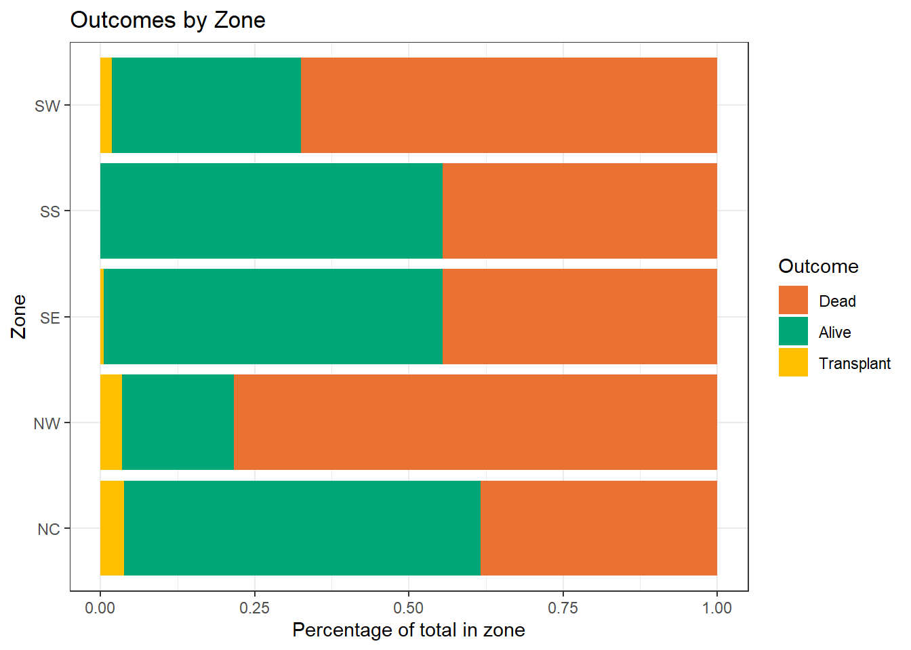
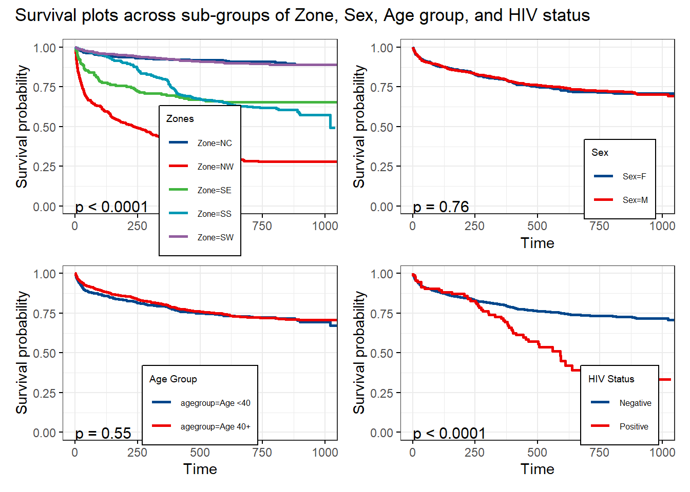
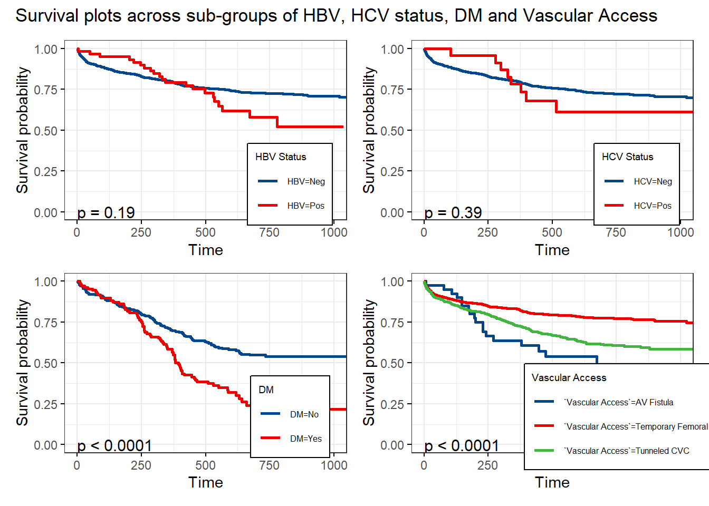

# Loading the necessary packages
packages <- c('tidyverse', 'gtsummary', 'gt', 'survival', 'survminer', 'sf', 'ggspatial',
'prettymapr', 'labelled', 'webshot2', 'patchwork')
lapply(packages, library, character.only = T)The Landscape of Renal Replacement Therapy in Nigeria | 2022 - 2023
A project of the renal registry committee of the Nigerian Association of Nephrologists
Analysis
Summary Statistics
Loading necessary packages and loading the data
# Loading the renal registry data
rr_data <- read_csv('rr_data.csv', trim_ws = T)# Selecting the necessary columns for analysis and enforcing data types
# Creating necessary/calculated columns
# Ensuring data types for ease of analysis
rr_data_new <- rr_data %>%
select(c(Sex, Age, Zone, State, `Centre Category`, `First Modality`, `Vascular Access`, DM, HBV, HIV, HCV, Outcome, `Date of Diagnosis`, `Date of Death or Transplant`))
# Creating labels for my table columns
col_labels <- c('Sex', 'Age(years)','Geopolitical Zone', 'State', 'Facility Type', 'First Modality','Vascular Access', 'DM Status', 'HBV Status', 'HIV Status', 'HCV Status', 'Outcomes', 'Date Diagnosed', 'Date of Death or Transplant')
rr_data_new <- set_variable_labels(.data = rr_data_new, .labels = col_labels)
rr_data_new <- rr_data_new %>%
mutate('Age Group' = case_when(Age < 20 ~ 'Less than 20',
Age >= 20 & Age <= 45 ~ '20 to 45',
Age > 45 & Age <=65 ~ '46 to 65',
Age > 65 ~ 'Greater than 65')
) %>%
mutate_at(c('Date of Diagnosis','Date of Death or Transplant'),
~as.Date(parse_date_time(., orders = c('mdy','dmy')))) %>%
mutate_at(c('Sex', 'Age Group', 'Zone', 'Centre Category', 'First Modality', 'Vascular Access', 'DM', 'HBV', 'HCV', 'HIV', 'Outcome'), as.factor)
head(rr_data_new)# A tibble: 6 × 15
Sex Age Zone State `Centre Category` `First Modality` `Vascular Access`
<fct> <dbl> <fct> <chr> <fct> <fct> <fct>
1 M 73 SW Ekiti Public HD Tunneled CVC
2 M 60 SW Ekiti Public HD Tunneled CVC
3 F 35 SW Ekiti Public HD Temporary Femoral …
4 M 48 SW Ekiti Public HD Tunneled CVC
5 M 46 SW Ekiti Public HD Temporary Femoral …
6 M 30 SW Ekiti Public HD Tunneled CVC
# ℹ 8 more variables: DM <fct>, HBV <fct>, HIV <fct>, HCV <fct>, Outcome <fct>,
# `Date of Diagnosis` <date>, `Date of Death or Transplant` <date>,
# `Age Group` <fct>Re-level factor variables to make sense of the data
rr_data_new <- rr_data_new %>%
mutate(`Age Group` = fct_relevel(`Age Group`, 'Less than 20','20 to 45','46 to 65', 'Greater than 65'),
DM = fct_relevel(DM, 'Yes', 'No'),
HIV = fct_relevel(HIV, 'Pos', 'Neg'),
HBV = fct_relevel(HBV, 'Pos', 'Neg'),
HCV = fct_relevel(HCV, 'Pos', 'Neg'),
Outcome = fct_relevel(Outcome, 'Dead', 'Alive', 'Transplant')
)Below is the summary table of the patient’s demographics
my_table_summary <- tbl_summary(rr_data_new,
include = c(Sex, Age, `Age Group`, Zone, `Centre Category`),
statistic = list(
all_continuous() ~ '{median} ({p25}, {p75})',
all_categorical() ~ '{n} ({p}%)'),
digits = list(
all_categorical() ~ c(0, 1),
all_continuous() ~ c(1,1))
) %>%
modify_header(label ~ '**Variables**') %>%
modify_caption('**Table 1 Sociodemographic Characteristics of Patients**') %>%
bold_labels() %>%
as_gt() %>%
cols_width(everything() ~ px(250))
my_table_summary| Variables | N = 5,5741 |
|---|---|
| Sex | |
| F | 2,130 (38.2%) |
| M | 3,444 (61.8%) |
| Age(years) | 49.0 (38.0, 59.0) |
| Age Group | |
| Less than 20 | 209 (3.7%) |
| 20 to 45 | 2,077 (37.3%) |
| 46 to 65 | 2,524 (45.3%) |
| Greater than 65 | 764 (13.7%) |
| Zone | |
| NC | 1,770 (31.8%) |
| NE | 86 (1.5%) |
| NW | 680 (12.2%) |
| SE | 484 (8.7%) |
| SS | 572 (10.3%) |
| SW | 1,982 (35.6%) |
| Centre Category | |
| Private | 1,604 (28.8%) |
| Public | 3,970 (71.2%) |
| 1 n (%); Median (Q1, Q3) | |
#gtsave(my_table_summary, filename = "table_summary.tex")Geographical Distribution of Patients (using the UN human data Nigerian shape file)
# Bring in the UN human data Nigerian shape file and merge/join with the relevant summary in the data
nigeria <- read_sf('nga_admbnda_adm1_osgof_20190417.shp')
# Creating a summary of all states with patient's number
pts_geog_distr <- rr_data_new %>%
group_by(State) %>%
summarise(pts_per_state = n()) %>%
ungroup()
head(pts_geog_distr)# A tibble: 6 × 2
State pts_per_state
<chr> <int>
1 Abia 116
2 Akwa Ibom 201
3 Borno 86
4 Cross River 135
5 Delta 84
6 Ebonyi 79# Confirm columns in State are similar to ADM1_EN
anti_join(pts_geog_distr, nigeria, by = c('State' = 'ADM1_EN'))# A tibble: 1 × 2
State pts_per_state
<chr> <int>
1 FCT 937# Only FCT is not named in the same way
# So we will rename FCT in the pts_geog_distr df
pts_geog_distr <- pts_geog_distr %>%
mutate(State = case_when(State == 'FCT' ~ 'Federal Capital Territory',
TRUE ~ State)
)
pts_geog_distr# A tibble: 25 × 2
State pts_per_state
<chr> <int>
1 Abia 116
2 Akwa Ibom 201
3 Borno 86
4 Cross River 135
5 Delta 84
6 Ebonyi 79
7 Ekiti 103
8 Enugu 275
9 Federal Capital Territory 937
10 Imo 14
# ℹ 15 more rows# Now safely combine both with a left join
map_data <- left_join(nigeria, pts_geog_distr, by = c('ADM1_EN' = 'State'))#compute centroids for states label
state_centroids <- map_data %>%
mutate(centroid = st_centroid(geometry)) %>%
mutate(long = st_coordinates(centroid)[,1],
lat = st_coordinates(centroid)[,2])
# Now plot the map
map_data %>%
ggplot(aes(fill = pts_per_state)) +
geom_sf()+
geom_point(data = state_centroids, aes(x = long, y = lat))+
geom_text(data = state_centroids, aes(x = long, y = lat, label = ADM1_EN),
size = 3, color = "black", nudge_y = -.2) +
scale_fill_gradient(
low = "#d8f3dc", high = "#00A676", na.value = "grey90")+
labs(
title = "Geographical distribution of patients by State"
) +
theme_bw()
Above is the map of Nigeria showing the state-level geographical distribution of patients who underwent RRT in 2022 - 2023
Patient’s Distribution by Facility Type and Zone
Below is the patient distribution by facility category and zone
rr_data_new %>%
group_by(Zone, `Centre Category`) %>%
summarise('No of Patients' = n()) %>%
ggplot(aes(x = Zone, y = `No of Patients`, fill = `Centre Category`, width = .7))+
geom_bar(stat = 'identity', position = position_dodge(width = 0.75, preserve = "single"))+
scale_fill_manual(values = c("Private" = "#E97132", "Public" = "#00A676")) +
labs(title = '')+
theme_bw()
Age Distribution by Zone and Category
ggplot(data = rr_data_new, aes(x = Zone, y = Age, fill = `Centre Category`))+
stat_boxplot(geom = "errorbar",
position = position_dodge(width = 0.75, preserve = "single"),
width = 0.2
)+
annotate("rect", xmin = -Inf, xmax = Inf, ymin = 40, ymax = 60,
fill = "#FF0000", alpha = 0.3) +
geom_boxplot(position = position_dodge(width = 0.75, preserve = "single"), width = .6)+
scale_fill_manual(values = c("Private" = "#E97132", "Public" = "#00A676"))+
geom_hline(yintercept = 60, linetype = 'dashed')+
geom_hline(yintercept = 40, linetype = 'dashed')+
theme_bw()
Patients Distribution by Sex and Zone
rr_data_new %>%
ggplot(aes(x = Zone, fill = Sex))+
geom_bar(position = 'dodge')+
scale_fill_manual(values = c("F" = "#E97132", "M" = "#00A676"))+
geom_text(stat = "count", aes(label = after_stat(count)),
position = position_dodge(width = 0.9),
vjust = -0.5)+
theme_bw()Temporal Trends in Kidney Failure Pattern
Below shows the visualization of the temporal trends in RRT in Nigeria (2022 - 2023)
# Aggregrate dataframe to show monthly trends
temporal_trend <- rr_data_new %>%
mutate(monthly_rrt = floor_date(`Date of Diagnosis`, unit = 'months')) %>%
group_by(monthly_rrt) %>%
summarise(monthly_rrt_pts = n()) %>%
filter(monthly_rrt >= ymd('2022-01-01') & monthly_rrt < ymd('2024-01-01')) %>%
ggplot()+
geom_vline(xintercept = ymd('2022-03-01'), width = .1, color = 'red',
linetype = 'dashed')+
geom_vline(xintercept = ymd('2022-09-01'), width = .1, color = 'red',
linetype = 'dashed')+
geom_vline(xintercept = ymd('2023-03-01'), width = .1, color = 'red',
linetype = 'dashed')+
geom_vline(xintercept = ymd('2023-09-01'), width = .1, color = 'red',
linetype = 'dashed')+
annotate('text',x = ymd('2022-06-01'), y = 650, label = 'Dry Season', size = 3.5)+
annotate('text',x = ymd('2022-12-01'), y = 650, label = 'Wet Season', size = 3.5)+
annotate('text',x = ymd('2023-06-01'), y = 650, label = 'Dry Season', size = 3.5)+
geom_line(aes(x = monthly_rrt, y = monthly_rrt_pts), color = "#00A676", width = 2)+
labs(title = 'Temporal trends in Renal Failure Incidence',
x = 'Monthly Trend',
y= 'No of Patients')+
theme_bw()
temporal_trend
Vascular Access (Overall and by Zone)
# Overall Vascular Access
rr_data_new %>%
filter(`Vascular Access` %in% c('AV Fistula','Temporary Femoral Catheter',
'Tunneled CVC')) %>%
select(`Vascular Access`) %>%
group_by(`Vascular Access`) %>%
summarise(count = n(),
`%Vascular Access` = paste0(round((count/4850)*100, 1),'%'))# A tibble: 3 × 3
`Vascular Access` count `%Vascular Access`
<fct> <int> <chr>
1 AV Fistula 102 2.1%
2 Temporary Femoral Catheter 3228 66.6%
3 Tunneled CVC 1520 31.3% rr_data_new %>%
filter(`Vascular Access` %in% c('AV Fistula','Temporary Femoral Catheter',
'Tunneled CVC')) %>%
ggplot(aes(x = Zone, fill = `Vascular Access`)) +
geom_bar(position = 'fill')+
scale_fill_manual(values = c("AV Fistula" = "#E97132",
"Temporary Femoral Catheter" = "#00A676",
"Tunneled CVC" = "#FFC000"))+
labs(title = 'Vascular Access by Zone',
y = 'Percentage of total in zone')+
theme_bw()
Health Outcomes (by Zone)
rr_data_new %>%
filter(Outcome %in% c('Dead','Transplant','Alive')) %>%
ggplot(aes(y = Zone, fill = Outcome)) +
geom_bar(position = 'fill')+
scale_fill_manual(values = c("Dead" = "#E97132",
"Alive" = "#00A676",
"Transplant" = "#FFC000"))+
labs(title = 'Outcomes by Zone',
x = 'Percentage of total in zone')+
theme_bw()Survival Analysis of Various Factors influencing Time to death
# Extract df survival analysis for variables Zone, Sex, Age Group, HIV, HBV, HCV, DM and Vascular Access
survival_data <- rr_data_new %>%
filter(`Date of Diagnosis` > ymd('2022-01-01') &
`Date of Diagnosis` %--% `Date of Death or Transplant`/days() > 0 ) %>%
#filter(HIV %in% c('Pos', 'Neg')) %>%
mutate(`HIV status` = case_when(HIV == 'Neg'~ 0,
HIV == 'Pos'~ 1),
days = `Date of Diagnosis` %--% `Date of Death or Transplant`/days(),
`death status` = case_when(Outcome == 'Dead' ~ 1,
Outcome %in% c('Alive','Transplant') ~ 0)) %>%
mutate(agegroup = case_when(Age >= 40 ~ 'Age 40+',
Age < 40 ~ 'Age <40')) %>%
select(days,`death status`,`HIV status`, Zone, Sex, agegroup, HBV, HCV, DM, `Vascular Access`)Code snippets for the survival analysis across variables are shown below with subsequent plots
# Survival plot by Zone
Zone_fit <- survfit(Surv(survival_data$days, survival_data$`death status`)~survival_data$Zone, data = survival_data)
p1 <- ggsurvplot(
fit = Zone_fit,
data = survival_data,
legend.title = 'Zones',
legend.text = element_text(size = 2, colour = "black"),
pval = T,
pval.size = 4,
pval.coord = c(0,0),
censor = F,
legend = c(.5, 0.19),
palette = 'lancet',
ggtheme = theme_bw() +
theme(legend.direction = 'vertical',
legend.text = element_text(size = 6),
legend.title = element_text(size = 7),
legend.background = element_rect(fill = "white", colour = "black", size = 0.5))
)# Survival plot for Sex
Sex_fit <- survfit(Surv(time = survival_data$days, event = survival_data$`death status`)~survival_data$Sex, data = survival_data)
p2 <- ggsurvplot(
fit = Sex_fit,
data = survival_data,
legend.title = "Sex",
pval = T,
pval.size = 4,
pval.coord = c(0,0),
censor = F,
legend = c(.8, 0.2),
palette = 'lancet',
ggtheme = theme_bw() +
theme(legend.text = element_text(size = 6),
legend.title = element_text(size = 7),
legend.background = element_rect(fill = "white", colour = "black", size = 0.5))
)# Survival plot for Age Group (<40 Vs >= 40)
Age_fit <- survfit(Surv(time = survival_data$days, event = survival_data$`death status`)~survival_data$agegroup, data = survival_data)
p3 <- ggsurvplot(
fit = Age_fit,
data = survival_data,
legend.title = "Age Group",
pval = T,
pval.size = 4,
pval.coord = c(0,0),
censor = F,
legend = c(.5, 0.2),
palette = 'lancet',
ggtheme = theme_bw() +
theme(legend.text = element_text(size = 6),
legend.title = element_text(size = 7),
legend.background = element_rect(fill = "white", colour = "black", size = 0.5)))# Survival plot by HIV status
HIV_fit <- survfit(Surv(time = survival_data$days, event = survival_data$`death status`)~survival_data$`HIV status`, data = survival_data)
p4 <- ggsurvplot(
fit = HIV_fit,
data = survival_data,
legend.title = "HIV Status",
pval = T,
pval.size = 4,
pval.coord = c(0,0),
censor = F,
legend = c(.8, 0.2),
legend.labs = c("Negative", "Positive"),
palette = 'lancet',
ggtheme = theme_bw() +
theme(legend.text = element_text(size = 6),
legend.title = element_text(size = 7),
legend.background = element_rect(fill = "white", colour = "black", size = 0.5)))# Survival plot by HBV status
HBV_fit <- survfit(Surv(time = survival_data$days, event = survival_data$`death status`)~survival_data$HBV, data = survival_data)
p5 <- ggsurvplot(
fit = HBV_fit,
data = survival_data,
legend.title = "HBV Status",
pval = T,
pval.size = 4,
pval.coord = c(0,0),
censor = F,
legend = c(.8, 0.2),
palette = 'lancet',
ggtheme = theme_bw() +
theme(legend.text = element_text(size = 6),
legend.title = element_text(size = 7),
legend.background = element_rect(fill = "white", colour = "black", size = 0.5)))# Survival plot by HCV status
HCV_fit <- survfit(Surv(time = survival_data$days, event = survival_data$`death status`)~survival_data$HCV, data = survival_data)
p6 <- ggsurvplot(
fit = HCV_fit,
data = survival_data,
legend.title = "HCV Status",
pval = T,
pval.size = 4,
pval.coord = c(0,0),
censor = F,
legend = c(.8, 0.2),
palette = 'lancet',
ggtheme = theme_bw() +
theme(legend.text = element_text(size = 6),
legend.title = element_text(size = 7),
legend.background = element_rect(fill = "white", colour = "black", size = 0.5)))# Survival plot by DM status
DM_fit <- survfit(Surv(time = survival_data$days, event = survival_data$`death status`)~survival_data$DM, data = survival_data)
p7 <- ggsurvplot(
fit = DM_fit,
data = survival_data,
legend.title = "DM",
pval = T,
pval.size = 4,
pval.coord = c(0,0),
censor = F,
legend = c(.8, 0.2),
palette = 'lancet',
ggtheme = theme_bw() +
theme(legend.text = element_text(size = 6),
legend.title = element_text(size = 7),
legend.background = element_rect(fill = "white", colour = "black", size = 0.5)))# Survival plot by Vascular Access
VAC_fit <- survfit(Surv(time = survival_data$days, event = survival_data$`death status`)~survival_data$`Vascular Access`, data = survival_data)
p8 <- ggsurvplot(
fit = VAC_fit,
data = survival_data,
legend.title = "Vascular Access",
pval = T,
pval.size = 4,
pval.coord = c(0,0),
censor = F,
legend = c(.8, 0.2),
palette = 'lancet',
ggtheme = theme_bw() +
theme(legend.text = element_text(size = 6),
legend.title = element_text(size = 7),
legend.background = element_rect(fill = "white", colour = "black", size = 0.5)))wrap_plots(p1$plot,p2$plot,p3$plot,p4$plot,
nrow = 2, ncol = 2) + plot_annotation(title = 'Survival plots across sub-groups of Zone, Sex, Age group, and HIV status')
wrap_plots(p5$plot,p6$plot,p7$plot,p8$plot,
nrow = 2, ncol = 2) + plot_annotation(title = 'Survival plots across sub-groups of HBV, HCV status, DM and Vascular Access')